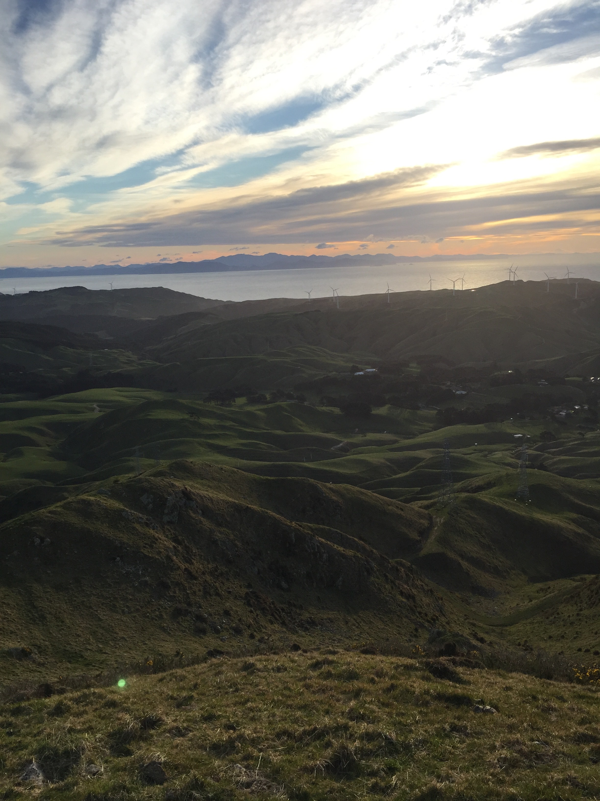

綺麗な景色で身も心もリフレッシュしませんか
ニュージーランドの首都から少し車を走らせると、
すぐそこに大自然が待っています。
土地に詳しくない、何かあった際の現地の人とのやりとりが不安 ...
そんな心配も無用です。送迎を含め、フルコースでアテンドします。
普段はあまり運動をしない方、ハイキング初心者の方、皆さまが楽しく登山に
チャレンジできるコースをご用意しております。
ハイキングコースのご案内
マウント
カウカウ
- 
Introduction
- ウェリントンから
車で約３０分 - 登山所要時間：２hrs
- 難易度★★★☆☆
- 山頂にたどり着くと、北側には、ウェリントンの街とハーバーが、 南には、ニュージーランド特有の風力発電所、ウィンドファームを一望できます。 ベストな登山時間は、夕方です。周囲の丘や山は高さがあまりないので 夕日が落ちていくその瞬間までしっかり見ることができます。
プタンギルア
ピナクルズ


Introduction
- ウェリントンから
車で約１時間～１時間半 - 登山所要時間：３hrs
- 難易度★★★★☆
- ファンタジー映画 ロード・オブ・ザ・リングの撮影地の一つとなった、 岩柱が連なり構成された山です。自然が創る出す景色に圧倒されること間違いなしです。 坂は比較的緩やかですが、登山道には岩や小石が多く、足場が悪いので、 滑りにくい履物が必要です。 高い岩に囲まれており、自然光がない時間帯は暗く、視界が阻まれる為、 ベストな登山時間は午前中です。
マウント
マンガヌイ 番外編

Introduction
- オークランドから
車で約２時間 - 登山所要時間：１hr
- 難易度★★☆☆☆
- 緩やかなコースと険しいコースを選択できます。 緩やかなコースでは、放牧された可愛い羊に道中で逢うことができます。 険しいコースからは、海を見渡せる絶景と、運が良ければ国鳥のファーンテイルに逢うことができます。 どちらのコースもトラックの整備が整っているので、初心者にも登山し易いのが特徴です。 一日を通してベストな登山時間ですが、お勧めは早朝で、朝日を拝むことです。